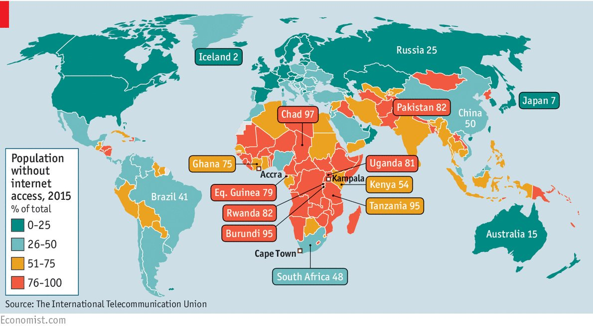

Statistics

- the proportion of young people (ages 15-24) using the Internet (71%) is significantly higher than the proportion of the total population using the Internet (48%).
- in on the developed world 94.3% of young people using the Internet compared to 81% of the general population.
- global average of a 12% more men have digital access than
- the statistics bare this out with a 20% year-on-year increase in mobile broadband (data) subscriptions.
- developing countries continue to use mostly mobile broadband with 23 in 100 people in LDCs (Least Developed Countries)
having mobile broadband compared to 1 in 100 who access the Internet through fixed line broadband.